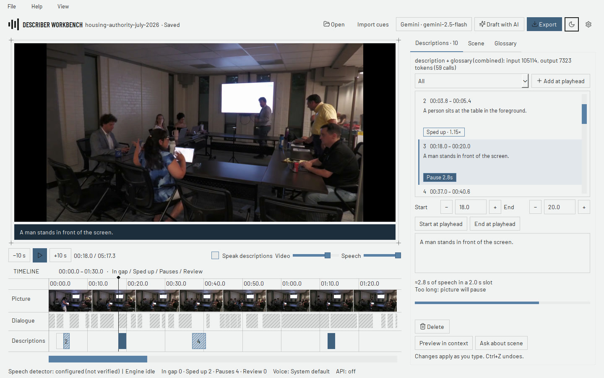
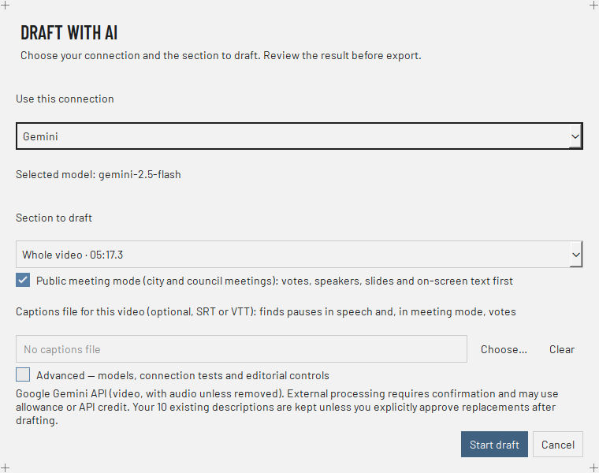
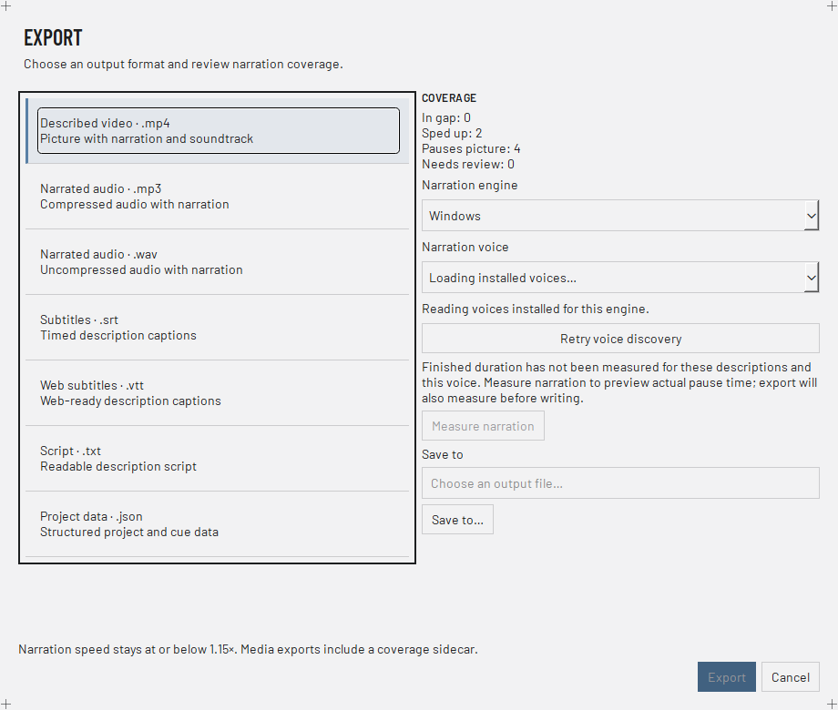

Ollama
Up to eight 640-pixel frames per request. No audio.
Describer Workbench writes audio description for video. An AI model drafts short, timed descriptions. You change the words and the timing, hear them over the soundtrack, and export a described video, narrated audio or subtitles.
Mac and Linux updates are manual. Compare each file with SHA256SUMS.txt in the release. Ollama, subscription tools and model files are separate downloads.

Screenshot of version 0.8.4 on Windows with a public Longmont Housing Authority board meeting video. The descriptions are unedited AI drafts from a test run. The video picture is the real frame at 0:18. It was added after capture, because Windows screen capture does not copy the video layer.
Review is optional. Cues marked Needs review are spoken in exports and keep their tag. Turn on Require review in Settings to block exports until you check them.
Matched loudness. Narration plays at the level of the video's own sound near it. A limiter stops clipping.
Meeting mode in the Draft window. A Public meeting mode box and a captions file picker. No settings file to edit.
The model writes a first draft. You decide what is said and when. Every step works on one project file that you can save and open again.
Open a local video, or a video or YouTube link through yt-dlp. Draft the whole video, or only the next 20 or 60 seconds. The glossary carries over from one part to the next.
Before any video or frames leave your computer, the app asks you to confirm. If cues already exist, they stay unless you approve the replacements after the draft.

Edit the words, the start and the end. Use Preview in context to hear a cue with the soundtrack. The voice comes from your system: Windows voices, macOS voices or eSpeak NG on Linux. OpenAI speech is optional.
The Scene tab answers questions about a scene. The Glossary tab holds character cards that you can correct. Ctrl+Z undoes edits.
A described MP4, narrated MP3 or WAV, SRT or VTT subtitles, a text script, or the project as JSON. The Export window shows how many cues fit a gap, are sped up, or pause the picture.
Media exports include a coverage file. It lists what happened to each cue.

Meeting videos are long and mostly still. Public meeting mode describes only frames that changed. It reads slide titles, finds votes from a captions file, and pauses only for votes, new speakers, slides and on-screen text. Turn it on with the box in Draft with AI. How it works.
Up from 29.5 % in 0.8.0. 105 cues on 13 test videos, graded by hand.
Down from 15.4 %. Trivial cues fell from 36.5 % to 10.5 %.
Every cue was spoken between speech or paused the video for a meeting event. Up from 45 % in a gap.
These numbers come from a small test set with the model gemma4:12b. They are not a promise for your video. Results change from run to run. The model can still report a vote when no hand is up, and some videos get very few cues.
Use Ollama on this computer, the Codex, Claude or Antigravity tools you already sign in to, a subscription gateway, a named OpenAI-compatible server, or a Gemini or Anthropic API key. The picker shows the exact model. The app never switches to another model by itself.
Up to eight 640-pixel frames per request. No audio.
Video analysis with your API key.
Tested model profiles: gemma4:12b, gemma4:26b and qwen3.8:27b-q6_K-vision, with thinking off, 32K output and 64K context. Other names for the same model do not get the profile. AI connections guide.
| Workflow | Key | Data sent |
|---|---|---|
| Manual cues, subtitles, native speech, MP3 | None | Stays on this computer |
| Ollama on this computer | None | Frames and prompts to local Ollama |
| Ollama cloud or remote | Set in Ollama | Sampled frames leave the computer after you confirm |
| Gemini analysis, Ask, Explore | Gemini key | Video with audio, unless you choose a silent upload |
| Codex / Claude / Antigravity tools | Your existing sign-in | Sampled frames and prompts after you confirm |
| Subscription gateway | Existing client-key file | Sampled frames through the selected gateway account |
| Compatible server / Anthropic API | Profile or API key | Sampled frames to the selected endpoint |
| OpenAI speech | OpenAI key | Description text after you confirm |
Cloud use needs provider access and can cost money. API credits are separate from subscriptions. A model in a catalog list is not proof that your account can use it, or that it can see images.
The desktop app, Python, the CLI, an authenticated REST/OpenAPI server and MCP use one job queue. Submit batches, cancel and resume, read pages of results, edit cues, check coverage, use scene tools and export.
Windows / Mac / Linux editor
Import the service
Native CLI on every host
Authenticated loopback, OpenAPI
17 tools · stdio + HTTP
Pinned local YAMNet detector
Selected vision connection
Event-bounded slots
Measured speech, ≤ 1.15×
Pauses where nothing fits
Developer integration guide ↗ · Architecture and data boundaries ↗
The page says what was tested and what was not.
Descriptions are AI drafts. In earlier tests, drafts named the wrong person, left out a short sequence and misread text. Read a draft before you publish it. Cues the AI was unsure about keep a Needs review tag.
Only the Windows build has publisher signing. The Mac app is not notarized, and Linux packages are not signed. Updates in the app work on Windows only.
No person has done a full listening review of the exports, and no one has tested the app with VoiceOver or Orca. Mac and Linux tests ran on GitHub test machines. 0.8.4 release notes and test results ↗
Python 3.11 or later, tested with 3.13. The code is Apache-2.0.
git clone https://github.com/scottconverse/Describer-Workbench.git
cd Describer-Workbench
py -3.13 -m venv .venv
.\.venv\Scripts\python.exe -m pip install -e ".[desktop,http,mcp,dev]"
.\.venv\Scripts\python.exe run.py
.\.venv\Scripts\python.exe -m pytest -qpython3 tools/install_unix.py. See the platform guide.Start with one scene
Version 0.8.4 for Windows, macOS and Linux.